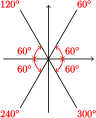
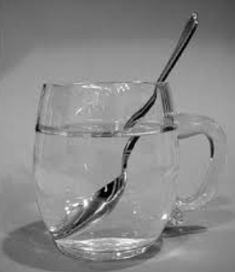

Section 5.2 Solving Equations
¶It is important to distinguish between an algebraic expression and an equation. An equation is a statement that two algebraic expressions are equal. It may be true or false, depending on the values of any variables involved. Here are some examples of equations. \begin{align*} 5(2 + 6) \amp = 5(2) + 5(6)\\ \sqrt{3^2 + 4^2}\amp= 3 + 4\\ x^2 + 3x \amp = 10\\ \end{align*} The first equation is true, the second is false, and the third equation is true only if \(x = 2\) or \(x = -5\text{.}\) When you solve an equation, you are finding the values of the variable that make the equation true.
Example 5.19
- Evaluate \(~~2x + \sqrt[3]{x - 1}\) for \(x = 9\text{.}\)
- Solve \(~~2x + \sqrt[3]{x - 1} = 20\text{.}\)
Solution
- Substitute \(x = 9\) into the expression to find \begin{align*} 2x + \sqrt[3]{x - 1} \amp = 2(\alert{9}) + \sqrt[3]{\alert{9} - 1}\\ \amp = 18 + \sqrt[3]{8} = 20\\ \end{align*}
- We must find a value for \(x\) that makes \(2x + \sqrt[3]{x - 1}\) equal to 20. In part (a) we saw that this expression equals 20 when \(x = 9\text{,}\) so the solution of the equation \(2x + \sqrt[3]{x - 1} = 20\) is \(x = 9\text{.}\)
Checkpoint 5.20
Use trial and error to find a solution of the equation
\begin{equation*}
2x^3 - 4x = 5x^2 - 3
\end{equation*}
(Hint: Try small integer values for \(x\text{.}\))
You probably remember a number of algebraic techniques for solving equations of different types. Another useful equation-solving method uses graphs.
Example 5.21
Use a graph to solve the equation \(x^3 - 2x^2 - 5x = -6\text{.}\)
Solution
We graph the expressions on either side of the equation, that is, we graph \(y = x^3 - 2x^2 - 5x\) and \(y = -6\) on the same grid, as shown below.
We are looking for any values of \(x\) where the two \(y\)-values are equal, and these occur at the intersection points of the two graphs. At those points, the \(x\)-values are \(x = -2,~ x = 1\) and \(x = 3\text{,}\) and these are the solutions of the equation. You can check that all three values make the equation true.
Checkpoint 5.22
Use a graph to show that the equation \(x^2 - 2x + 4 = 0\) has no real-valued solutions.
Answer
The graph does not cross the line \(y = 0\text{.}\)
Subsection Trigonometric Equations
The first Ferris wheel was built for the Chicago World's Fair in 1893. It had a diameter of 250 feet and could carry 2160 people in 36 carriages. From the top of the wheel, passengers could see into four states. After loading all the passengers, the wheel made one revolution in nine minutes.
If you are in the bottom carriage of the Ferris wheel at the start of its revolution, your height after \(t\) seconds is given by
\begin{equation*}
h = f(t) = 139 - 125\cos (\dfrac{2t}{3})
\end{equation*}
For how long are you more than 240 feet above the ground?
The figure below shows a graph of the height function and a horizontal line at \(h = 240\text{.}\)
From the graph, we see that \(h = 240\) at approximately 215 seconds and 325 seconds into the ride. Your height is more than 240 feet between those two times, or for about 110 seconds.
Subsection Solving Trigonometric Equations
In the example above, we used a graph to solve the equation \(h = 240\text{,}\) or
\begin{equation*}
139 - 125\cos (\dfrac{2t}{3}) = 240
\end{equation*}
To find a more precise solution, we can use algebraic methods. As an example, we'll solve the slightly simpler equation
\begin{equation*}
139 - 125\cos\theta = 240
\end{equation*}
We'll look for all solutions for \(\theta\) between \(0\degree\) and \(360\degree\text{.}\) We begin by isolating the trigonometric ratio on one side of the equation. \begin{align*} 139 - 125\cos \theta \amp = 240 \amp \amp \blert{\text{Subtract 139 from both sides.}}\\ - 125\cos \theta \amp = 101 \amp \amp \blert{\text{Divide both sides by -125.}}\\ \cos\theta \amp = -0.808\\ \end{align*} We have solved equations like this one before: we use the inverse cosine to solve for \(\theta\text{.}\) Remember that there are two angles between \(0\degree\) and \(360\degree\) that have a cosine of \(-0.808\text{,}\) one in the second quadrant and one in the third quadrant. The calculator will give us only the second quadrant solution.
\begin{equation*}
\theta = \cos^{-1}(-0.808) = 143.9\degree
\end{equation*}
To find the second solution, we need the third-quadrant angle whose cosine is \(-0.808\text{.}\)
Now, the reference angle for \(143.9\degree\) is
\begin{equation*}
180\degree - 143.9\degree = 36.1\degree
\end{equation*}
and the angle in the third quadrant with the same reference angle is
\begin{equation*}
180\degree + 36.1\degree = 216.1\degree
\end{equation*}
(See the figure at right.) Thus, the other solution is \(216.1\degree\text{.}\)
To solve simple equations involving a single trigonometric ratio (either \(\sin \theta, \cos \theta,\) or \(\tan \theta\)), we can follow the steps below.
To Solve a Trigonometric Equation for \(0\degree \le\theta\le 360\degree\)
- Isolate the trigonometric ratio.
-
Find one solution.
- Give an exact solution if the trig ratio is one of the special values.
- Otherwise use the inverse trig keys on a calculator.
- Use reference angles to find a second solution (if there is one).
Example 5.24
Solve the equation \(~~8 \sin \theta - 1 = 3\) for \(0\degree \le\theta\le 360\degree\text{.}\)
Solution
We begin by isolating the trig ratio. \begin{align*} 8 \sin \theta - 1 \amp = 3 \amp \amp \blert{\text{Add 1 to both sides.}}\\ 8 \sin \theta \amp = 4 \amp \amp \blert{\text{Divide both sides by 8.}}\\ \sin \theta \amp = \dfrac{4}{8} = \dfrac{1}{2}\\ \end{align*}
We recognize that \(\sin \theta = \dfrac{1}{2}\) for one of the special angles, namely \(\theta = 30\degree\text{,}\) and also for the obtuse angle \(\theta = 150\degree\text{,}\) as shown at right.
Note that \(\theta = 150\degree\) is the second-quadrant angle with reference angle\(\theta = 30\degree\text{.}\) Because the sine is negative in the third and fourth quadrants, there are no other solutions between \(0\degree\) and \(360\degree\text{.}\) The solutions we want are \(\theta = 30\degree\) and \(\theta = 150\degree\text{.}\)
Checkpoint 5.27
Solve the equation \(~~5 \tan \theta + 7 = 2\text{,}\) for \(0\degree \le\theta\le 360\degree\text{.}\)
We can use a calculator to help us solve equations that do not involve special angles.
Example 5.28
Solve the equation \(~~3 \tan \beta + 1 = -8\) for \(0\degree \le\theta\le 360\degree\text{.}\) Round your solutions to three decimal places.
Solution
First, we isolate the trig ratio. \begin{align*} 3 \tan \beta + 1 \amp = -8 \\ 3 \tan \beta \amp = -9 \\ \tan \beta \amp = -3\\ \end{align*}
There are two angles with tangent -3, one in the second quadrant and one in the fourth quadrant. The calculator finds the solution
\begin{equation*}
\tan^{-1}(-3) = -71.565\degree
\end{equation*}
This angle is in the fourth quadrant, but it is not between \(0\degree\) and \(360\degree\text{.}\) The angle we want in is coterminal with \(-71.565\degree\text{,}\) so we add \(360\degree\) to get the first solution:
\begin{equation*}
B = \tan^{-1}(-3) + 360\degree = 288.435\degree
\end{equation*}
The other solution is in the second quadrant, as shown in the figure. This angle is \(180\degree\) less than the fourth quadrant solution:
\begin{equation*}
B = \tan^{-1}(-3) + 180\degree = 108.435\degree
\end{equation*}
Checkpoint 5.30
Solve the equation \(~~4 \cos C - 6 = -3\text{,}\) for \(0\degree \le\theta\le 360\degree\text{.}\) Round your solutions to three decimal places.
Some trigonometric equations have no solution. As we can observe from their graphs or from their definitions, the sine and cosine functions only have values ranging from -1 to 1.
Example 5.31
Solve \(~~\dfrac{\sin \beta}{5} - 3 = 1\text{,}\) for \(0\degree \le\theta\le 360\degree\text{.}\)
SolutionWe begin by isolating \(\sin \beta\text{.}\) \begin{align*} \dfrac{\sin \beta}{5} - 3 \amp = 1 \amp \amp \blert{\text{Add 3 to both sides.}}\\ \dfrac{\sin \beta}{5} \amp = 4 \amp \amp \blert{\text{Multiply both sides by 5.}}\\ \sin \beta \amp = 20\\ \end{align*} Because \(\sin \beta\) is never greater than 1, there is no angle \(\beta\) whose sine is 20. The equation has no solution.
Checkpoint 5.32
Solve \(~~\cos \theta + 5 = 3\text{,}\) for \(0\degree \le\theta\le 360\degree\text{.}\)
Subsection Graphical Solutions
We can use graphs to approximate the solutions to trigonometric equations.
Example 5.33
Use a graph to solve the equation \(3\tan B + 1 = -8\text{.}\)
Solution
Graph the equation \(~~y = 3\tan B + 1\) and the horizontal line \(y = -8\) on the same axes, as shown below.
It is difficult to read the graph with much accuracy, but you can use the intersect feature on your calculator to verify that the graph of \(y = 3\tan B + 1\) has \(y\)-value \(-8\) when \(B\) is about \(108.4\degree\) or \(288.4\degree\text{.}\)
Checkpoint 5.34
Use a graph to verify your solutions to \(~~4 \cos C - 6 = -3\text{.}\)
Subsection Equations with Squares of Trig Ratios
Simple quadratic equations can be solved by extracting roots. For example, to solve the equation
\begin{equation*}
4x^2 + 3 = 15
\end{equation*}
we first isolate \(x^2\text{:}\) \begin{align*} 4x^2 \amp = 12\\ x^2 \amp = 3\\ \end{align*} and then take square roots of both sides to find
\begin{equation*}
x = \pm \sqrt{3} \approx \pm 1.732
\end{equation*}
Recall that a quadratic equation may have two real solutions, one (repeated) real solution, or no real solutions. We can use extraction of roots to solve trigonometric equations as well.
Example 5.35
Solve \(~~4 \tan^2 \theta + 3 = 15, \) for \(0\degree \le\theta\le 360\degree\text{.}\)
Solution
We begin by isolating the power of tangent, \(\tan^2 \theta\text{.}\) \begin{align*} 4\tan^2 \theta \amp = 12\\ \tan^2 \theta \amp = 3\\ \end{align*} Next, we solve for \(\tan \theta\) by extracting roots.
\begin{equation*}
\tan \theta = \pm \sqrt{3}
\end{equation*}
There are two angles between \(0\degree\) and \(360\degree\) with tangent \(\sqrt{3}\) and two angles with tangent \(-\sqrt{3}\text{,}\) making four solutions to this equation. We know that \(\tan 60\degree = \sqrt{3}\text{,}\) so one of the solutions is \(60\degree\text{.}\)
The tangent function is also positive in the third quadrant, and the angle in the third quadrant with reference angle \(60\degree\) is \(180\degree + 60\degree = 240\degree\text{.}\) The angles in the second and fourth quadrants with reference angle \(60\degree\) have tangent \(-\sqrt{3}\text{.}\) These angles are

\begin{equation*}
180\degree - 60\degree = 120\degree ~~ \text{and} ~~ 360\degree - 60\degree = 300\degree
\end{equation*}
The four solutions are shown at right.
Checkpoint 5.36
Solve the equation \(~~2\sin^2 \theta = 1,\) for \(0\degree \le\theta\le 360\degree\text{.}\)
Other quadratic equations can be solved by factoring. For example, we can solve the equation
\begin{equation*}
4x^2 + 4x - 3 = 0
\end{equation*}
by factoring the left side to get
\begin{equation*}
(2x + 3)(2x - 1) = 0
\end{equation*}
Then we apply the Zero Factor Principle to set each factor equal to zero, and solve each equation. \begin{align*} 2x + 3\amp = 12 ~~~~~~~~~~2x - 1= 0\\ x \amp = \dfrac{-3}{2} ~~~~~~~~~~~~~~~~~~ x = \dfrac{1}{2}\\ \end{align*} The solutions are \(\dfrac{-3}{2}\) and \(\dfrac{1}{2}\text{.}\)
Example 5.37
Solve \(~~2 \cos^2 \theta - \cos \theta - 1 = 0,\) for \(0\degree \le\theta\le 360\degree\text{.}\)
Solution
Compare this equation to the algebraic equation \(2x^2 - x - 1 = 0\text{.}\) Our equation has the same algebraic form, but with \(x\) replaced by \(\cos \theta \text{.}\) We can solve the algebraic equation by factoring \(2x^2 - x - 1\) as \((2x + 1)(x - 1),\) and we'll use the same strategy on the trigonometric equation. \begin{align*} 2 \cos^2 \theta - \cos \theta - 1 \amp = 0 \amp \amp \blert{\text{Factor the left side.}}\\ (2\cos \theta + 1)(\cos \theta - 1) \amp = 0 \amp \amp \blert{\text{Set each factor equal to zero.}}\\ \cos \theta \amp = \dfrac{-1}{2} ~~~ \text{or} ~~~~\cos \theta = 1\\ \end{align*} Now we solve each equation for \(\theta\text{.}\) We know that \(\cos 60\degree = \dfrac {1}{2},\) and the cosine function is negative in the second and third quadrants. The angles in those quadrants with reference angle \(60\degree\) are
\begin{equation*}
180\degree - 60\degree = 120\degree ~~~\text{and} ~~~ 180\degree + 60\degree = 240\degree
\end{equation*}
Also, \(\cos \theta = 1\) when \(\theta = 0\degree\text{.}\) Thus, the original equation has three solutions: \(\theta = 120\degree, ~ \theta = 240\degree,\) and \(\theta = 0\degree.\)
Checkpoint 5.38
Solve \(~~9 \sin^2 \theta - 3 \sin \theta = 2,\) for \(0\degree \le\theta\le 360\degree\text{.}\) Round your answers to the nearest degree.
Subsection Snell's Law
When you view an object through a liquid, such as a spoon in a glass of water, or a fish in an aquarium, the object looks distorted or bent. This distortion is caused by refraction of light. Light rays bend when they pass from one medium to another, for instance from water to glass or from glass to air.

A light ray enters the boundary between the two media at a certain angle, called the angle of incidence, but leaves the boundary at a different angle, the angle of refraction. Both angles are acute angles measured from the normal line perpendicular to the boundary, as shown below.
The change of angle is caused by the fact that light travels at different speeds in different media. The relationship between the angle of incidence and the angle of refraction is given by Snell's Law:
\begin{equation*}
\dfrac{\sin \theta_1}{\sin \theta_2} = \dfrac{v_1}{v_2}
\end{equation*}
where \(\theta_1\) is the angle in the medium where light travels at speed \(v_1\text{,}\) and \(\theta_2\) is the angle where light travels at speed \(v_2\text{.}\) The ratio of the speeds is called the index of refraction.
Example 5.39
The index of refraction from water to glass is 1.1. If light passes from water to glass with a \(23\degree\) angle of incidence, what is the angle of refraction?
SolutionIf \(\theta\) is the angle of refraction, then from Snell's Law we have \begin{align*} \dfrac{\sin 23\degree}{\sin \theta} \amp = 1.1 \amp \amp \blert{\text{Multiply both sides by} \sin \theta.}\\ \sin 23\degree \amp = 1.1 \sin \theta \amp \amp \blert{\text{Divide both sides by 1.1.}}\\ \sin \theta \amp = \dfrac{\sin 23\degree}{1.1} = 0.3552\\ \end{align*} Because \(\sin \theta = 0.3552,~~ \theta = \sin^{-1}(0.3552) = 20.8\degree.\) (For Snell's Law we use only acute angles.) The angle of refraction is approximately \(20.8\degree\text{.}\)
Checkpoint 5.40
A light ray passes from water to glass with an \(18\degree\) angle of incidence. What is the angle of refraction?
Subsection Algebra Refresher
Subsubsection Exercises
Each of the following "solutions" contains an error. Find the error, and supply a correct solution.
1
\begin{align*} 3x^2 - 5x\amp = 0 \\ 3x^2 \amp = 5x\\ 3x \amp = 5\\ x \amp = \dfrac{5}{3}\\ \end{align*}
2
\begin{align*} 4x^2 - 5x\amp =12 \\ x^2 \amp = 3\\ x \amp = \sqrt{3}\\ \end{align*}
3
\begin{align*} (2x+1)^2\amp = 4 \\ 2x+1 \amp = 2\\ 2x \amp = 1\\ x \amp = \dfrac{1}{2}\\ \end{align*}
4
\begin{align*} 2x^2 - 4x\amp = 3 \\ 2x(x-2) \amp = 3\\ 2x \amp = 3 ~~~~ x - 2 = 3\\ x \amp = \dfrac{3}{2} ~~~~~~~~~~x = 5\\ \end{align*}
Subsubsection Answers to 5.2 Exercises
- \(x = 3\)
-
The graph does not cross the line \(y = 0\text{.}\)
- \(\theta = 135\degree~ \text{and}~ \theta = 315\degree\)
- \(C = 41.410\degree~ \text{or}~ C = 318.590\degree\)
- No solution
- \(\theta = 45\degree,~\theta = 135\degree,~\theta = 225\degree,~\text{or}~\theta = 315\degree\)
- \(\theta = 42\degree,~\theta = 138\degree,~\theta = 199\degree,~\text{or}~\theta = 341\degree\)
- \(16.315\degree\)
Subsubsection Algebra Refresher Answers
- We can't divide by \(x.~~x = 0, \dfrac{5}{3}\)
- 3 has two square roots. \(~x = \pm\sqrt{3}\)
- 4 has two square roots. \(~x = \dfrac{-3}{2}, \dfrac{1}{2} \)
- One side must be zero to use the zero-factor principle. No real solutions.
Subsection Section 5.2 Summary
Subsubsection Vocabulary
- Equation
- Solve
- Zero Factor Principle
- Angle of incidence
- Angle of refraction
- Normal
Subsubsection Concepts
- An equation is a statement that two algebraic expressions are equal. It may be true or false.
- We can solve equations by trial and error, by using graphs, or by algebraic techniques.
- To solve a trigonometric equation, we first isolate the trigonometric ratio on one side of the equation.
- We use reference angles to find all the solutions between \(0\degree\) and \(360\degree\text{.}\)
- We can use factoring or extraction of roots to solve some quadratic equations.
Subsubsection Study Questions
- How many solutions between \(0\degree\) and \(360\degree\) does the equation \(\cos \theta = k\) have for each value of \(k\) between -1 and 0?
- How many solutions between \(0\degree\) and \(360\degree\) does the equation \(\cos \theta = k\) have for each value of \(k\) greater than 1?
- How many solutions between \(0\degree\) and \(360\degree\) does the equation \(\sin^2 \theta = k\) have for each value of \(k\) between -1 and 0?
Subsubsection Skills
- Use reference angles #1-8
- Solve equations by trial and error #9-14
- Use graphs to solve equations #15-18, #39-52
- Solve trigonometric equations for exact values #19-32, 39-46
- Use a calculator to solve trigonometric equations #33-38, 47-52, 65-68
- Solve trigonometric equations that involve factoring #53-64
Subsection Homework 5.2
¶
For Problems 1–4, find the reference angle. (If you would like to review reference angles, see Section 4.1.)
1
\(250\degree\)
2
\(145\degree\)
3
\(320\degree\)
4
\(-110\degree\)
For Problems 5–8, find an angle in each quadrant with the given reference angle.
5
\(18\degree\)
Answer\(18\degree;\)\(162\degree;\)\(198\degree;\)\(342\degree\)
6
\(35\degree\)
7
\(52\degree\)
Answer\(52\degree;\)\(128\degree;\)\(232\degree;\)\(308\degree\)
8
\(78\degree\)
For Problems 9–14,
- Evaluate the expression at the given values of the variable.
- Give one solution of the equation.
9
- \(x^3 - 3x^2 + 4;~~~x = -1, 0, 1, 2, 3\)
- \(x^3 - 3x^2 + 4 = 0\)
Answer
- \(0,~4,~2,~0,~4\)
- \(-1~\text{or}~2\)
10
- \(\sqrt{x} + \sqrt{2x+1};~~~x = 0, 2, 4, 6\)
- \(\sqrt{x} + \sqrt{2x+1} = 5\)
11
- \(\sin \theta + \cos \theta;~~~\theta = 0\degree, 30\degree, 45\degree, 60\degree\)
- \(\sin \theta + \cos \theta = \sqrt{2}\)
Answer
- \(1,~\dfrac{\sqrt{3}+1}{2},~\sqrt{2},~\dfrac{\sqrt{3}+1}{2}\)
- \(45\degree\)
12
- \(\sin^2 \alpha - \cos \alpha;~~~\alpha = 45\degree, 90\degree, 135\degree, 180\degree\)
- \(\sin^2 \alpha - \cos \alpha = 1\)
13
- \(\sin \beta + 2\cos^2 \beta;~~~\beta = 210\degree, 225\degree, 240\degree, 270\degree\)
- \(\sin \beta + 2\cos^2 \beta = -1\)
Answer
- \(0,~\dfrac{2-\sqrt{2}}{2},~\dfrac{1 -\sqrt{3}}{2},~-1\)
- \(270\degree\)
14
- \(3\cos^2 \phi - \sin^2 \phi;~~~\phi = 270\degree, 300\degree, 315\degree, 330\degree\)
- \(3\cos^2 \phi - \sin^2 \phi = 2\)
For Problems 15–18, use a graph to solve the equation. Check your solution by substitution.
15
\(\dfrac{-1}{3}x^2 + \dfrac{2}{3}x + 5 = 0\)
16
\(0.0625x^2 + 0.5 x = -1\)
17
\(x^3 + 2x^2 - 6 = 2x^2 + 7x\)
18
\(8 - 12x + 6x^2 - x^3\)
For Problems 19–32, solve the equation exactly for \(0\degree \le\theta\le 360\degree\text{.}\)
19
\(3\tan \theta = \sqrt{3}\)
Answer\(\theta = 30\degree ~\text{or}~ \theta = 210\degree\)
20
\(7\sin \theta + 11 = 11\)
21
\(3 = 5 - 4\cos \theta \)
Answer\(\theta = 60\degree ~\text{or}~ \theta = 300\degree\)
22
\(6\tan \theta + 21 = 15\)
23
\(8\sin \theta + 5 = 1\)
Answer\(\theta = 210\degree ~\text{or}~ \theta = 330\degree\)
24
\(9\cos \theta + 15 = 6\)
25
\(0 = \sqrt{2} + 2\sin \theta \)
Answer\(\theta = 225\degree ~\text{or}~ \theta = 315\degree\)
26
\(\sqrt{3}\cos \theta = -\dfrac{3}{2}\)
27
\(\cos^2 \theta - 1 = 0\)
Answer\(\theta = 0\degree ~\text{or}~ \theta = 180\degree\)
28
\(1 - \sin^2 \theta = 0\)
29
\(4\sin^2 \theta - 3 = 0 \)
Answer\(\theta = 60\degree, ~\theta = 120\degree,~\theta = 240\degree,~\text{or}~ \theta = 300\degree\)
30
\(0 = 1 - 2\cos^2 \theta\)
31
\(1 - \tan^2 \theta = 0\)
Answer\(\theta = 45\degree,~\theta = 135\degree,~\theta = 225\degree, ~\text{or}~ \theta = 315\degree\)
32
\(0 = 6 \tan^2 \theta - 2\)
For Problems 33–38, solve the equation for \(0\degree \le\theta\le 360\degree\text{.}\) Round your answers to two decimal places.
33
\(\dfrac{1}{2}\tan \theta - 1 = -3\)
Answer\(\theta = 104.04\degree ~\text{or}~ \theta = 284.04\degree\)
34
\(3\tan \theta - 2 = 4\)
35
\(3 = 5\cos \theta \)
Answer\(\theta = 53.13\degree ~\text{or}~ \theta = 306.87\degree\)
36
\(4 = 6\sin \theta\)
37
\(7 \sin \theta + 2 = 1\)
Answer\(\theta = 188.21\degree ~\text{or}~ \theta = 351.79\degree\)
38
\(2 = 5 - \dfrac{1}{3} \tan \theta \)
For Problems 39–46,
- Use a graph to estimate the solutions for angles between \(0\degree\) and \(360\degree\text{.}\)
- Solve the equation algebraically.
39
\(7 - \tan A = 8\)
Answer\(A = 135\degree ~\text{or}~ A = 315\degree\)
40
\(6 = 8\tan w - 2\)
41
\(5 = 1 - 8\sin \phi\)
Answer\(\phi = 210\degree ~\text{or}~ \phi = 330\degree\)
42
\(9 - 4\sin t = 13\)
43
\(2\cos B - 2 = -2\)
Answer\(B = 90\degree ~\text{or}~ B = 270\degree\)
44
\(2 - 6\cos u = 5\)
45
\(3 = 2\sin \theta + 4\)
Answer\(\theta = 210\degree ~\text{or}~ \theta = 330\degree\)
46
\(5 = 3\cos x + 5\)
For Problems 47–52,
- Use a graph to estimate the solutions for angles between \(0\degree\) and \(360\degree\text{.}\)
- Solve the equation algebraically, rounding angles to the nearest degree.
47
\(8\sin t + 7 = 4\)
Answer\(t = 202\degree ~\text{or}~t = 338\degree\)
48
\(9 - 6\cos A = 5\)
49
\(5\tan B - 4 = -2\)
Answer\(B = 22\degree ~\text{or}~ B = 202\degree\)
50
\(3 - 10\tan C = -11\)
51
\(1 + 6\cos \phi = -4\)
Answer\(\phi = 146\degree ~\text{or}~ \phi = 214\degree\)
52
\(4\sin u - 2 = -1\)
For Problems 53–64, solve the equation for \(0\degree \le\theta\le 360\degree\text{.}\) Round angles to two decimal places.
53
\(6\cos^2 \theta = 2\)
Answer\(\theta = 54.74\degree, ~\theta = 125.26\degree,~\theta = 234.74\degree,~\text{or}~ \theta = 305.26\degree\)
54
\(2 - 7\sin^2 \phi = 1\)
55
\(5\sin^2 \theta + \sin \theta = 0\)
Answer\(\theta = 0\degree, ~\theta = 180\degree,~\theta = 191.54\degree,~\text{or}~ \theta = 348.46\degree\)
56
\(4\tan^2 \theta = \tan \theta\)
57
\(2\cos^2 \theta + \cos \theta - 1 = 0\)
Answer\(\theta = 60\degree,~ \theta = 180\degree,~\text{or}~ \theta = 300\degree\)
58
\(\tan^2 \theta - 5\tan \theta + 6 = 0\)
59
\(6\tan^2 \theta - \tan \theta - 1 = 0\)
Answer\(\theta = 26.57\degree, ~\theta = 161.57\degree,~\theta = 206.57\degree,~\text{or}~ \theta = 341.57\degree\)
60
\(10\cos^2 \theta - 7 \cos \theta + 1 = 0\)
61
\(\tan^2 \theta - 2\tan \theta = 15\)
Answer\(\theta = 78.69\degree, ~\theta = 108.43\degree,~\theta = 258.69\degree,~\text{or}~ \theta = 288.43\degree\)
62
\(\tan \theta = \tan^2 \theta - 0\)
63
\(\cos^2 \theta - 4\cos \theta + 3 = 0\)
64
\(\sin^2 \theta + 8\sin \theta + 7 = 0\)
For Problems 65–68, use Snell's Law to answer the question.
65
A light ray passes from water to glass, with a \(19\degree\) angle of incidence. What is the angle of refraction?
66
A light ray passes from water to glass, with an \(82\degree\) angle of incidence. What is the angle of refraction?
67
A light ray passes from water to glass, with a \(32\degree\) angle of refraction. What is the angle of incidence?
68
A light ray passes from water to glass, with a \(58\degree\) angle of refraction. What is the angle of incidence?
69
- Use your calculator to graph the function \(y = \tan \theta\) in the ZTrig window (press \(\boxed{\text{ZOOM}}~ \boxed{\text{7}}\)), along with the horizontal line \(y = 2\text{.}\) Use the intersect feature to verify that the solutions of the equation \(\tan \theta = 2\) differ by \(180\degree\text{.}\)
- Repeat part (a) with the horizontal line \(y = -2\) to verify that the solutions of the equation \(\tan \theta = -2\) differ by \(180\degree\text{.}\)
70
- What is the angle in the third quadrant with reference angle \(\theta\) ? Show this angle differs from by \(180\degree\text{.}\) Explain how this fact shows that the solutions of \(\tan \theta = k\text{,}\) for \(k \gt 0\text{,}\) differ by \(180\degree\text{.}\)
- What is the angle in the second quadrant with reference angle \(\theta\) ? What is the angle in the fourth quadrant with reference angle \(\theta\) ? Show that these two angles differ by \(180\degree\text{.}\) Explain how this fact shows that the solutions \(\tan \theta = k\text{,}\) for \(k \lt 0\text{,}\) differ by \(180\degree\text{.}\)